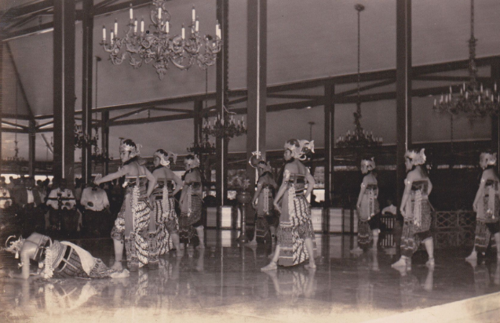

Nilai-Nilai Luhur Tari Gaya Mangkunegaran
Tari Srimpi Bandelori tari gaya Mangkunegaran (2017)
Tari gaya Mangkunegaran sebagai warisan budaya adiluhung memiliki banyak nilai-nilai luhur. Nilai-nilai luhur tersebut berkaitan dengan identitas budaya, jati diri, dan makna filosofis dalam kehidupan manusia. Inilah yang membuat tari gaya Mangkunegaran menjadi sebuah warisan budaya yang tak ternilai harganya.
Karakteristik tari gaya Mangkunegaran terbentuk dari perpaduan antara tari gaya Surakarta dan Yogyakarta. Hal ini tampak pada pola-pola gerak dan pelaksanaan geraknya. Konsep yang digunakan pada kedua gaya tari tersebut adalah konsep Joged Mataram dari Yogyakarta dan konsep Hastha Sawanda dari Surakarta.
Konsep Joged Mataram terdiri dari empat prinsip, yaitu:
- 1. Sewiji atau Sawiji: konsentrasi total tanpa menimbulkan ketegangan jiwa
- 2. Greget: semangat untuk mengekspresikan kedalaman jiwa pada gerak dengan pengendalian sempurna
- 3. Sengguh: percaya pada kemampuan sendiri tanpa adanya kesombongan
- 4. Ora mingkuh: pantang menyerah dan penuh tanggung jawab

Konsep Hastha Sawanda terdiri dari delapan prinsip, yaitu:
- 1. Pacak: kemampuan fisik penari yang sesuai dengan bentuk dasar
- 2. Pancat: gerak peralihan yang diperhitungkan secara matang
- 3. Ulat: pandangan mata dan ekspresi wajah sesuai dengan karakter
- 4. Lulut: gerak menyatu dengan penari, seolah tanpa dipikirkan
- 5. Luwes: kualitas gerak menyentuh hati penonton
- 6. Wiled: variasi gerak berdasarkan kemampuan penari
- 7. Irama: hubungan gerak dengan iringan secara keseluruhan
- 8. Gendhing: penguasaan karawitan tari termasuk rasa lagu, irama, dan tembang
Terdapat beberapa jenis tari gaya Mangkunegaran yang populer di antaranya:
- 1.Bedhaya: tarian sakral yang biasanya ditampilkan dalam upacara adat atau penyambutan tamu kehormatan
- 2. Srimpi: tarian yang menggambarkan kecantikan dan kelembutan wanitag
- 3. Langendriyan: tarian yang berbentuk drama tari, biasanya penari menyayikan tembang macapat sebagai dialognya
- 4. Wireng: tarian yang bertema keprajuritan
Tari jenis wireng berkembang lebih beragam dalam bentuknya. Wireng sangat menonjol pada masa pemerintahan K.G.P.A.A. Mangkoenagoro IV (1853-1881). Hal ini dapat dilihat dari adanya 41 tari wireng yang diciptakan pada masa itu. Tari jenis ini diciptakan berdasarkan cerita Mahabharata dan Wong Agung Menak. Contoh tari wireng yang bersumber pada cerita Mahabharata atau Wayang Purwa, yaitu Gatotkaca Dadung Awuk, Mandra Asmara, Mandrarini, Mandra Kusuma, Srikandhi Larasati, Gatotkaca Antasena, Werkudara Baladewa, dan Wirapratama.
Setiap tari selalu mempunyai nilai dan makna yang berbeda, tetapi penekanannya selalu pada kebenaran dan kebaikan. Nilai-nilai inilah yang penting untuk diimplementasikan dalam membentuk karakter yang kuat dan budi pekerti yang luhur.